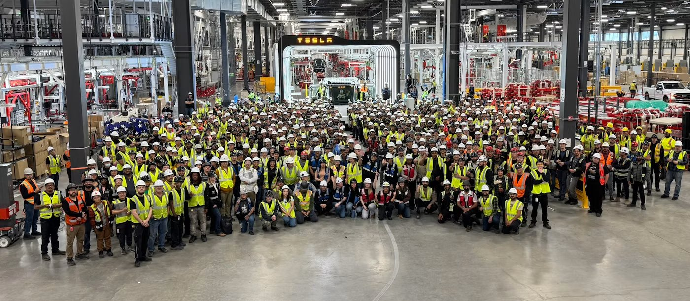

I spent summer 2026 on the Tesla Semi manufacturing engineering team. While the amount I can share is limited, my work centered on production tooling, technician training and station cycle time.
Inside the factory
What I worked on
- Reverse engineered proprietary production tools in CATIA V5 from laser scan and CMM data, bringing modifications in-house and saving thousands of dollars in contracting costs.
- Designed and built a scaled-down 6-axis Fanuc robot cell that trains technicians on programming workflows, mirroring full-scale production processes in a hands-on format.
- Improved station cycle times by designing and manufacturing specialized tooling in-house, using Formlabs printers to produce parts with material properties suited to each application.
Top skills used
- CATIA V5
- Reverse engineering
- Laser scanning and CMM
- Fanuc robotics
- Pneumatic design
- SLA printing